Code 1 -- Notes -- parameter structure |
P1 code number (1)
P2
staff number
P3
horizontal position
P4
vertical position
P5
note stem, accidental
P6
note head type, tabulature
P7
P8
P9
P10
P11
P12 note on staff above/below
P13
P14 vertical displacement of mark
P15
P16
P17
P18
P19
P20
P22
P23
P25
P26
P30 controls ledger lines for unusual situations
P31 change size of dot after note
To input a single note, type
NOTEF = note with a flat.
NOTES = note with a sharp.
NOTEN = note with a natural.
NOTED
(+F, S,
N) = note with stem down.
When the note appears it is directly in edit mode and may be moved, etc. with the various edit commands. Hitting <enter> or X leaves edit mode.
P4
indicates which staff line (or space) the note is on, regardless of clef.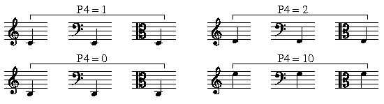
For grace notes (mini-notes) add 100 to P4 (or -100 if P4 is negative.) Add 100 to P8 to slash the grace note's tail. (-100 if P8 is negative.) Typically, the P7 value for grace notes is 65.
P5 is normally a 2-digit number which does double duty.
The left digit tells which direction the stem will go.
1 = stem up, 2 = stem down.
If there is no left digit the note will have no stem.
The right hand digit indicates the note's accidental.
0 = none 3 = natural 6 = 1/4 tone flat 8 = 1/4 tone sharp
1 = flat 4 = double flat 7 = 3/4 tone flat 9 = 3/4 tone sharp
2 = sharp 5 = double sharp
P5 = 13 = stem up, natural sign on note; = 21 = stem down, flat on note.
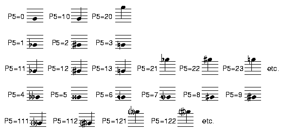
Add 100 to P5 to put parentheses around the accidental.
See P29 regarding size of accidental.
>>>See also Shortcut Letter Commands.
Accidentals are displaced to the LEFT by adding numbers to the right of
P5's decimal point. The program multiplies this number by 10 to get the
actual displacement. If the 1st digit after the decimal point is 9, the
remaining digits X 10 gives the displacement to the RIGHT.
P5 = 12.25 = stem up, sharp displaced 2.5 steps to LEFT of normal.
P5 = 12.935 = stem up, sharp displaced .35 steps to RIGHT of normal.
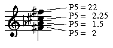
| Notice that the P5 settings for all these notes (except the top one) are single digit numbers (to the left of the decimal point). This is because these notes do not have a stem attached to them. Instead, the top note has the stem attached (and consequently has the double digit number). You only need the stem attached to the top note of a chord when stemmed down, and the bottom note of a chord when stemmed up. The other notes have only a single digit to indicate a stemless note head with an accidental. |
ENHarmonic changes: ENHU = the note moves UP 1 step and a
sharp is changed to a flat. ENHD = the note moves DOWN 1
step and a flat is changed to a sharp, etc. ENH alone assumes
a logical change. (ENH does NOT consider key signatures or
previous accidentals.)
Toolbar buttons:
= accidental in parentheses
= enharmonic to note below 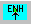
= space acci. to left 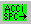 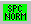 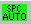
P6 = note head types
P6= 0= black,
1= half, 2= whole, 3= breve (dbl. whole)
=4= white diamond,
5= black diamond, 6= X note
=7(or -1)= headless,
8= diamond/x, 9= oval/x
Add 10 to P6 to put these note heads in parentheses.
*********** Any Library item may be used as a note head. *****************
*********** Use the Code-9 P5 value as the note's P6 value. *****************
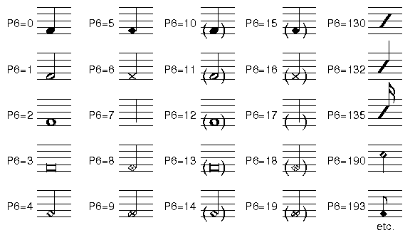
Jump for educational note heads. (Round notes with letter names imprinted.)
Lute tablature is also available (see Code 9 for a chart of the symbols),
and the user may also create any note head of his or her own design
using the DRAW program.
For tabulature notation P6 = a negative number indicating the number of strings involved. (Use P6 = -6 for six-string guitar.) Click here for details.
P7
holds rhythmic time value (ALWAYS needed for automatic spacing systems).for a whole note, P7 = 4 (i.e. 4 times as long as a quarter note).
An eighth note triplet = .3333, or 1/3 of the time of a quarter, etc.
These may be thought of as real time values in seconds, where
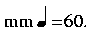
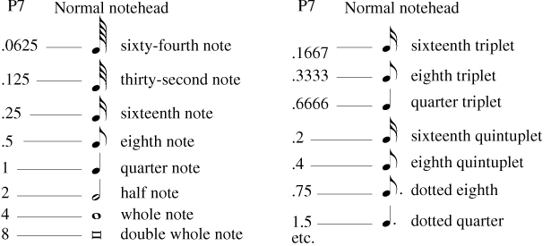
| Notice that P7 is different from the numbers you use to input rhythm during the input stage. You input a quarter note as 4 (the number of notes that would equal a whole note). The P7 value for a quarter note, however, is 1, not 4. P7 indicates duration mathematically, as a portion of a quarter note. An eighth note's P7 is .5, a dotted quarter note's P7 is 1.5, and so on. "Irrational" rhythms, such as a triplet eighth note, are carried out to four decimal places, even though SCORE only displays three decimal places during editing. Lets look at the example of a triplet eighth note. There are three of these notes in a single quarter beat, so we calculate P7 by dividing 1 by 3 (don't worry, SCORE does this automatically during input, and you only need to do it if you have to alter P7 during editing). 1 divided by 3 is 0.333333333333, so P7 must equal 0.3333, not 0.333. P7 must have a correct value for SCORE to perform spacing, lineup and justifying functions. The Lineup function will not register a line as having the "correct" number of beats if you do not have the correct P7 value. (Of course, SCORE puts the correct rhythmic value in P7 automatically during the rhythm input stage, based on your input.) |
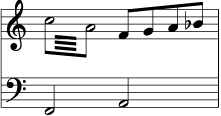
In the above example, for LJ to work correctly, the first two notes on the top staff must have P7 = 1 (quarter note duration) while P6 = 1 (half note head).
Negative values in P7 are used for special situations.
P7 = -1 = ignore note when justifying.
-2 = suppress printing of ledger lines no matter what vertical pos.
-3 = do both of the above.
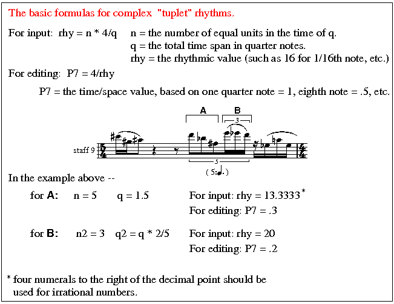
P8 = 0 = normal stem (1 octave up or down).
Positive values in P8 extend the stem. P8 = 1.5 = stem is 1.5 scale steps
longer than normal. Negative values shorten the stem. P8 + or - 100 puts
slash on grace note tails. (i.e. P8 = -101 = slashed note with shorter stem)
See the letter commands (ADJ) for
automatic adjustments at end of this section
P9 = 12 = note with 1 dot and 2 tails.
P9 = 20.31 = note with 2 dots displaced to right by 3.1 units, no tails.
P9 = 10.94 = note with 1 dot displaced to LEFT by .4, no tails.
When 100 is added to P9, the dot following a note which appears ON
a staff line will appear below that line instead of in the normal position
above the line. Adding 1000 to P9 displaces dots one note width to
the right. The size of the rhythm dot can be changed with P31.
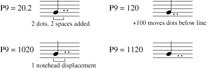
SCORE automatically creates the P9 value during
input when you create chords, but you may need to
alter it sometimes during editing. Note that you may
combine adding 1000 and 100 to force a dot to the
right and down:
If a dot must appear at other levels, it may be positioned
with P19 or it may be created as a Code 9 item and
positioned separately.
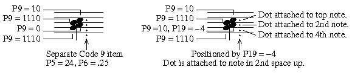
Tails (flags) On A Note
Parameter 9 also holds the information for tails. The left
digit indicates the number of dots, and the right digit indicates
the number of tails on a stem. You can have any combination
up to nine dots and nine tails.
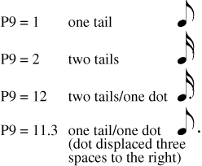
P10 is used to displace the note head from its normal position (given in P3).
This is usually used for chord structures which include the close interval
of the second. It is also used to offset note(s) in multiple-voice notation.
It is essential that when you need to displace or offset a note that you alter
P10 and do not move the note manually (with the mouse, cursor keys, etc.)
to attain the displacement. If you do move a note manually, you alter its P3
value and prevent SCORE'S lineup and justify function from working.
A P10 value of 10 or 20 will displace the note head exactly one note
head width to the right or left, and will suffice in most situations. With
P10 = 10 the note head will move to the right but any accidental will
remain in its normal position. In the rare cases when you wish the
accidental also to move to the right, set P10 = 110.
Numbers from -9.9 to 9.9 will displace the note in increments of
horizontal space units, and
may be used for more precise positioning.
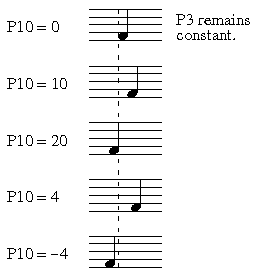
Toolbar buttons:
= offset 1 note width to left = 0ffset 1 note width to right
 = offset .5
to left
= offset .5
to left  = offset .5 to right
= offset .5 to right  = zero offset
= zero offset
P11 holds information about the marks which are often attached to note heads.
[See below re. mark displacement (P13, P14) and mark size (P18).]
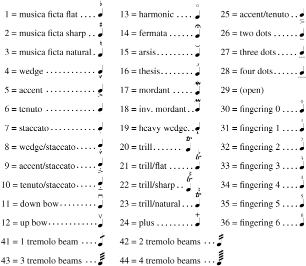
Other marks may be positioned near notes using Code 9.
Normally, most marks appear on the note-head side of the note-stem combination. For these marks the use of a negative value in P11 will force the mark to appear on the stem side, regardless of the stem direction as set in P5.
P5 = 10, P11 = 32 = stem up, fingering number 2 below note head.
P5 = 10, P11 = -32 = stem up, number 2 above note's stem.
Numbers to the right of P11's decimal point will cause the mark to be displaced vertically. The program multiplies this part of P11 by 10 to get the displacement value in scale steps. (P14 may also be used for this.)
P11 = 5.13 = accent over note, displaced by 1.3 scale steps.
P5 = 20, P11 = -34.2 = stem down, fingering number 4 pushed 2 steps below end of note stem.
P11 = 99 makes a heavy line extending to right of note head.
P13 sets how many steps to right start of heavy line. (P13 default = 2.3)
P14 sets total distance from front edge of note to end of heavy line.
(P14 default = 10.)
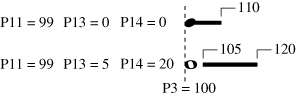
This type of indication is primarily seen in contemporary scores that employ non-mensural notation.
Toolbar buttons:
= move mark to left = move mark to left = mark to normal horizontal position
= move mark up = move mark down = mark to normal vertical position
= remove mark = tremolo beam = add a tremolo beam
= flip mark to opposite side of note
For example, P4 = 4, P12 = 1 = note appears in bottom space of staff above.
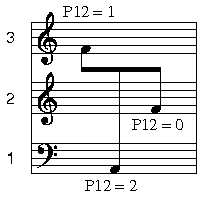
In the above example, all three notes are attached to the middle staff (P2 = 2); P12 shifts the notes so that they appear to be on the staff above or below.
Toolbar buttons:
= click on this to cycle through P12 = 1, 2, 0.
P13 may be used to displace marks horizontally (+/-) from their default position.
If P13 = 99, the mark will be centered on the note stem.
For example, P13 = 99 and p11 = 7 centers staccato dot
over stem instead of middle of note.
P14 may be used to displace marks vertically (+/-). (by scale steps.)
( i.e. 0.75 in P15 will create a note that is 75% of the normal size for a particular staff size.)
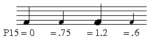
The default situation is that ledger lines will be 2 pixels thicker
than staff lines. (Staff line thickness depends on the basic line
thickness given when using the PRint command. However the thickness
of staff lines can also be influenced by a staff's P11. See Code 8 help.)
Mini-notes (P4>100) will normally have only one pixel added to ledger
line thickness.
The value in P16 will add or subtract from the line thickness given with
the PRint command, WITHOUT REGARD to staff line thickness.
If P16 = 99 then the note's ledger lines will be exactly the same thickness
as the staff lines. (This is for very small staff sizes.)
If P16 is not zero, all defaults are overridden.
P17 = extension of SOURCE of note stem, in + or - scale steps from P4 position.
Add 100s for thicker stems --- 100 = add 1 pixel, 200 = add 2, etc.
P18 = change size of marks (P11) from default.
If the size of a mark below or above a note is changed, most often the horizontal position should be adjusted with P13. However the staccato dot (P11 = 7) will retain its proper position if the size is changed.
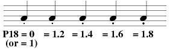
P19 If P9 is used to add
rhytm dots, P19 can move the dots up or down.
This may be used in place of P9 + 100.
P20 note width factor.
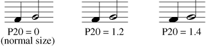
If note widths are changed any connected beams must be recentered.
Educational note heads (P6, P21 to 24) -- AlphaNotes.
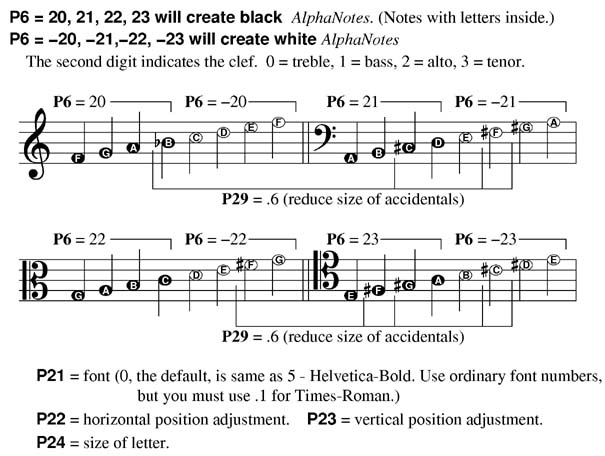
A large staff size (P5 = 1.3 to 1.8) is recommended for AlphaNote scores.
P25 layer number.
See Color Control.
P26 color/gray value.
See Color Control.
P27 color of ledger lines.
Ledger lines will normally be the same color as the controlling staff lines. (P27 = 0)
If color is applied to a note, P27 = 1 will give the ledger lines the same color.
P28 pixel width of accidental.
This is is often useful with accidentals on grace notes on small staff sizes.
The effect of this only appears in PostScript printed output; no change is
seen on display.
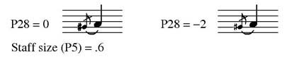
P29 size of accidental.
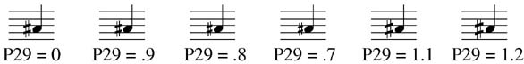
P30 controls ledger lines for unusual situations.
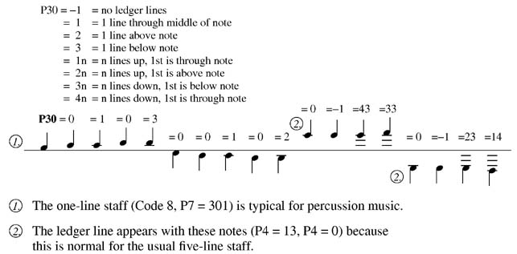
P31 can change size of dot after note (rhythm augmentation dot).
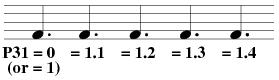
__________________________________________________________________________
CUX = normal size note. (P4 < 100)
If a number follows CN, the note will center on the nearest
note or rest on that staff.
>>> Stems (P8)
ADJ
= adjust note stem to beam.
ADJX = adjust note stem when beam's stem direction is opposite.
ADF = adjust note stem to beam (F = in the French manner).
ADFX = adjust note stem when beam's stem direction is opposite.
ADJ n = adjust note stem to beam on staff n.
NST = no stem on note. (removes left digit of P5)
STM = (stem -) shorten the note stem by 1/2 scale step. (P8)
STN = set stem length to normal. (P8 = 0 = 1 octave)
>>> Rhythm P6, P7, P9
If CH is typed it may be followed by a P7 duration value.
(e.g. 'CH .25' will make all chord notes have 1/16 rhythm.)
RH64 = 64th note. (P6, 7, 9)
RH32 = 32nd note. (P6, 7, 9)
RHS or RH16 = makes 1/16 note. (P6, 7).
RHE or RH8 = makes 1/8 note. (P6, 7).
RHQ or RH4 = makes 1/4 note. (P6, 7).
RHW or RH1 = makes whole note. (P6, 7).
RHD or RH.5 = makes double whole note. (P6, 7).
RHG = makes grace note. (P4, 7, 8, 9)
RHU (or RH5, RH10, RH20, RH40) = change rhythm to quintuplet. (P7)
e.g. P7=.5 (1/8) becomes =.4 (1/10)
TRP (or RH3, RH6, RH12, RH24, RH48) = change rhythm to triplet. (P7)
e.g. P7=.5 (1/8) becomes =.333 (1/12)
TRP and RHU are ignored if original rhythm is not
a basic duple value. (1/2, 1/4, 1/8, etc.) In such
a case use letters such as RH12, RH20, etc..
NTA = remove tail(s). (P9) No change in rhythmic value.
>>> Dots (P9)
DDT = make double dot. (P7, 9)
DUD = dot up/down, above or below staff line.
SPDN = space dot to right 1 note width
Type 'DOT' to return to normal position.
>>> Offsets
OFR = offset one note width to the right (P10 = 10)
OFM = offset minus, moves note .5 step to left. (P10)
OFP = offset plus, moves note .5 step to right.
NOF = no offset of note - P10 = 0.
>>> Accidentals (P5)
DBS = adds double sharp to note.
ENH+ or ENHU = move note up 1 step and change accidental to
enharmonic equivalent (if possible).
ASP = automatic spacing of 2nd accidental in chord.
SPA- = space accidental to right (less space)
ACT = add accent + tenuto. P11 = 25.
AST = add accent + staccato. P11 = 9.
DNB = add down bow. P11 = 11.
UPB = add up bow. P11 = 12.
FE = add fermata. P11 = 14.
IMO = add inverted mordent. P11 = 18.
HW = add heavy wedge. P11 = 19.
MO = add mordant. P11 = 17.
PLU = add plus sign. P11 = 24.
STA = add staccato. P11 = 7.
TN = add tenuto. P11 = 6.
TNS = add tenuto + staccato. P11 = 10.
W = add wedge mark to note. P11 = 4.
WST = add wedge + staccato. P11 = 8.
FLM = flip mark to opposite side of note. (P11)
MKL, MKR, MKU, MKD = left, right, up, down movement of marks
NOM = remove mark from note. (P11 = 0)
Function Key Setup for Code 1
| F1 Help |
F2 Back to Previous Item |
F3 Forward to Next Item |
F4 Back to Previous Item, Same Code # |
F5 Forward to Next Item, Same Code # |
F6 . . . |
| F7 Flip |
F8 Center |
F9 Exit from Edit Mode ( X ) |
F10 . . . |
F11 Delete, Move to Previous, Same Code # |
F12 Delete, Move to Next, Same Code # |
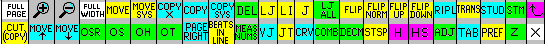